Clase 9: Segunda Ley, Ciclo de Carnot y Entropía
La primera ley no distingue entre lo que ocurre y lo que nunca ocurre: un vaso roto que se recompone la cumple igual de bien. La segunda ley pone esa dirección, primero como una prohibición sobre máquinas térmicas y después, vía el ciclo de Carnot, como una función de estado nueva: la entropía.
Temas que cubre
- Procesos espontáneos: ocurren sin necesidad de efectuar trabajo — y la termodinámica no dice nada de su velocidad
- Depósitos térmicos (fuente y sumidero) y máquina térmica como sistema compuesto
- Enunciado de Kelvin-Planck (1851/1893) y enunciado de Clausius (1854)
- Teorema de Carnot (1824): ninguna máquina supera a la reversible que opera entre los mismos focos
- Procesos reversibles e irreversibles: qué cae en cada lista y por qué
- El ciclo de Carnot: dos isotermas y dos adiabáticas, todas reversibles
- Eficiencia del ciclo de Carnot y la relación
- Motor de combustión interna de 4 tiempos y el ciclo de Otto idealizado
- Definición termodinámica de entropía:
- de un gas ideal en expansión isotérmica, y de los alrededores
- Interpretación molecular: niveles de energía, distribución de Boltzmann, microestados
- Entropía estadística y su consistencia con la definición termodinámica
- Demostración de que es función de estado: aproximación de un ciclo reversible cualquiera por ciclos de Carnot
Conceptos clave
Proceso espontáneo
El que ocurre sin necesidad de efectuar trabajo sobre el sistema: una tendencia natural. Ojo con la trampa habitual — la termodinámica dice si un proceso puede ocurrir, no cuán rápido. El diamante es termodinámicamente inestable frente al grafito y aun así dura eones.
Máquina térmica
Sistema compuesto por dos piezas: la máquina, un sistema cerrado donde un fluido describe un proceso cíclico cuasiestático, y los focos, sistemas de temperatura constante que no se alteran al extraerles o entregarles calor (el mar, el ambiente, un fluido en ebullición). El resultado neto es producción de trabajo.
Kelvin-Planck vs. Clausius
Kelvin-Planck prohíbe convertir calor íntegramente en trabajo en un ciclo; Clausius prohíbe que el calor pase solo de frío a caliente. Son equivalentes: quien violara uno podría acoplarse a una máquina normal y violar el otro. Ambos son negativos — dicen qué no se puede, no qué se puede.
Teorema de Carnot
Ninguna máquina térmica que funcione entre dos focos puede tener rendimiento mayor que una máquina reversible operando entre esos mismos focos. Enunciado en 1824, antes que la primera y la segunda ley: es otra forma de enunciar el segundo principio.
Reversible vs. irreversible
Reversibles: expansión controlada, movimiento sin fricción, deformación elástica, circuitos sin resistencia, descarga controlada de una pila. Irreversibles: resistencia eléctrica, ondas de choque, histéresis, flujo viscoso, fricción, expansión libre, estrangulamiento, reacciones químicas espontáneas y mezcla de fluidos distintos.
El camino reversible
se calcula integrando , no . Si el proceso real es irreversible hay que inventar un camino reversible entre los mismos estados inicial y final. Como es función de estado, el resultado vale igual.
Microestados
es el número de microestados compatibles con un mismo macroestado. Cuantas más maneras hay de repartir las moléculas sin cambiar lo que se mide, mayor la entropía. Es el puente entre lo que se mide en el laboratorio y lo que hacen las moléculas.
Por qué es función de estado
Cualquier ciclo reversible se aproxima por una suma de ciclos de Carnot; los tramos internos se cancelan de a pares y sólo sobrevive el perímetro. Como cada ciclo de Carnot aporta cero, la integral cíclica de es cero, y eso es exactamente la definición de diferencial exacta.
Fórmulas fundamentales
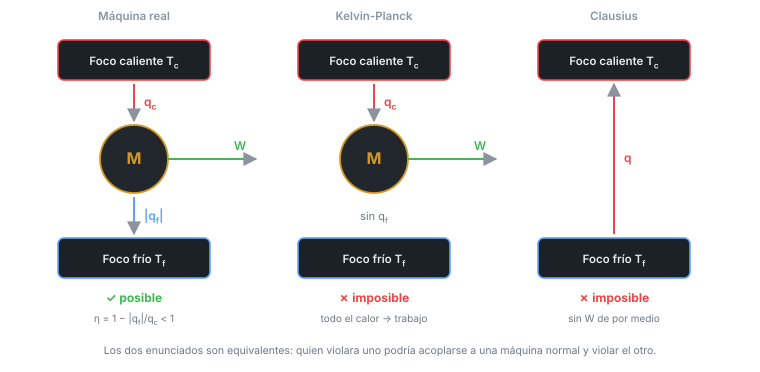
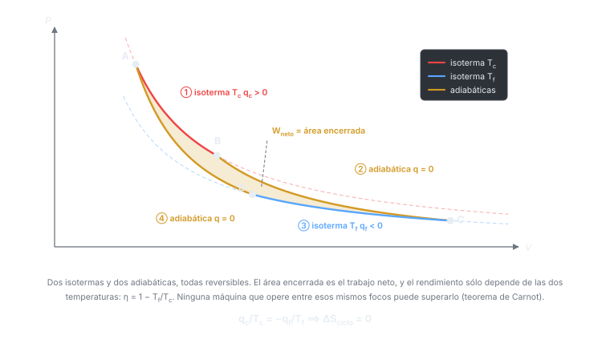
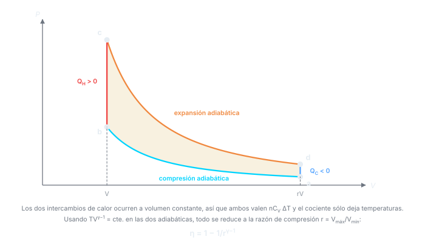
Qué hay que entender
- La primera ley dice que la energía se conserva; la segunda, en qué dirección se mueven las cosas. Un vaso que se recompone solo conserva la energía perfectamente y sin embargo no ocurre.
- Los dos enunciados son prohibiciones, y de una prohibición sale una cota: Carnot. De la cota sale una igualdad para el caso reversible, , y de ahí la entropía. Ese es el hilo completo de la clase.
- exige temperaturas absolutas. Meter °C ahí es el error más frecuente y puede hasta dar rendimientos mayores que 1.
- Para de un proceso irreversible: inventar un camino reversible entre los mismos extremos e integrar ahí. El del sistema sale igual; lo que cambia con la irreversibilidad es el de los alrededores.
- La entropía del sistema puede perfectamente disminuir (un gas que se comprime, un líquido que congela). Lo que no puede disminuir es la del universo.
- "Desorden" es una analogía cómoda pero engañosa: lo que cuenta son microestados accesibles, no lo revuelta que se vea una habitación.
- El ciclo de Otto no es de Carnot: su rendimiento depende de la razón de compresión y queda por debajo del de Carnot entre las mismas temperaturas extremas.